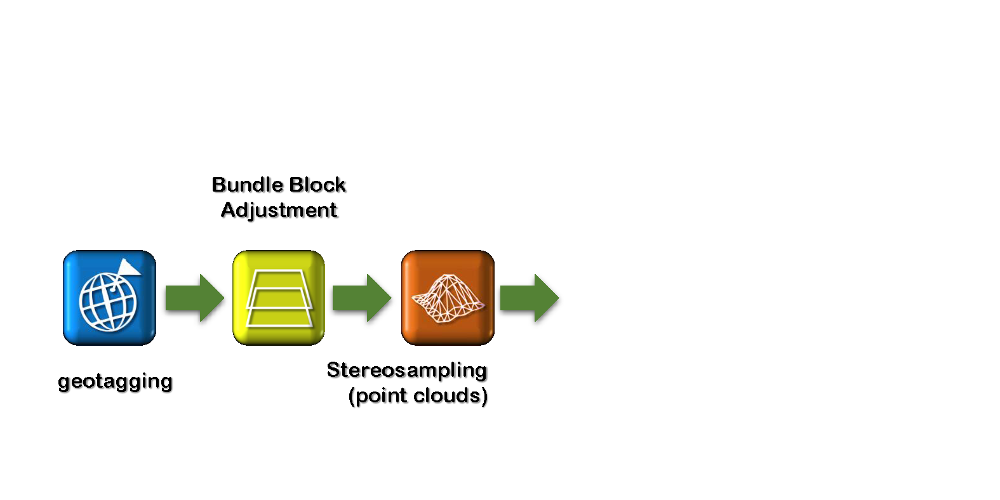

Aerial Photogrammetry
- Basic concepts
GIS595/MEA792: UAV/lidar Data Analytics
Author
Fall 2015
Objectives (1)
- Understand the remote sensing crucial role in Earth Sicence, especialy in spatial data aquisition
- Use the proper terminology and understand its meaning
- Recognize the significance of aerial photography in collecting spatial data (also a need in historical context)
- Outline the improvement of aerial photography and connect it with the knowledge of UAS development
- Describe different types of aerial photography and associated with them challenges for measurements
Objectives (2)
- Understand why photrogrammetry needs to be used in order to make mesurements based on aerial photographs
- Describe the process of photogrammetric flight planning
- Understand lateral and forward overlap, stereoscopic coverage, flight lines and focal length terms
- Indicate the specific problems emerging when aerial imagery is aquired by low range UAS equipped in non-photogrammetric camera
- Distinguish steps for processing UAS derived data in comparison with traditional photogrammetry
What is Remote Sensing?
- Sensing without contact;
- Gathering data from a distance;
- Fundamental to all sentient life forms;
- Two principle senses – sight and sound;
- Sight and sound have similar physiological and psychological underpinnings.
Psychology of SIGHT
- Sensors (eyes) take input and pass them along to the brain;

- The brain makes the interpretations and connections;
- Stereoscopic vision is amazing brain capability;
Color production for sight
happens in the brain;
Eyes collect data– brain produces information.
Remote sensing for mapping explained

Remote Sensing Development
- Invention the photographic process (disputed time – inventor);
- Pictures taken (from the bird’s eye view – buildings and high structures and... Using birds;
- Invention of a flying vehicle aerial photography of larger areas;
Remote sensing development- aerial photography

- Aerial photography – the first form of remote sensing extremely useful for geography
Aerial photography

- First World War - aerial photography extensively used for recording human geography
Photogrammetry – a broad spectrum

Remote sensing, photogrammerty and GIS


Source of diagrams: Schenk (2005), modified
Geometry of aerial photograph
San Francisco Earthquake
Oblique aerial photography from 1906

Aerial photography for map making in the past
- Mostly the domain of the military;
- Some photographs were taken from a vertical perspective during WW1
- If you piece them together they look like a map
- Widely used tool for mapping (accuracy not all that important at this point)
Making Measurements
- Photo mosaics were useful, but they only give you the overview and are not accurate maps.
- In the late 1800’s the development of the parlor stereoscope was a source of entertainment before radio and TV were invented.
Photogrammetry (1)
- It is a 3-dimensional coordinate measuring technique that uses PHOTORAPHS as the fundamental medium for measurement;
- The science of taking precise measurements from photographs;
- The most important development in map making;
- Very precise measurements can be taken from stereoscopic images.
Photogrammetry (2)
- 1851: French officer Aime Laussedat develops the first photogrammetrical devices and methods. He is seen as the initiator of photogrammetry;
- 1911: The Austrian Th. Scheimpflug finds a way to create rectified photographs. He is considered as the initiator of aerial photogrammetry, since he was the first succeeding to apply the photogrammetrical principles to aerial photographs;
- but... it took 80 years to make it useful for measurements
Orthorectification

Orthorectification

Orthorectification

Orthorectification

Orthorectification

Orthorectification

Orthorectification

Photogrammetry (3)
- Correct distortions, and you have a remote mapping tool (heights, distances, areas);
- Removes ground survey as a map making method;
- some ground survey still necessary, but only of very small areas
- All topographic maps are produced using this technology.
Geoprocessing - workflow

Geoprocessing - workflow

Geoprocessing - workflow

Geoprocessing - workflow

Geoprocessing - workflow

Geoprocessing - workflow

Geoprocessing - workflow

Geoprocessing - workflow

Geoprocessing - workflow

Geoprocessing - workflow

Geoprocessing - workflow

Geoprocessing - workflow